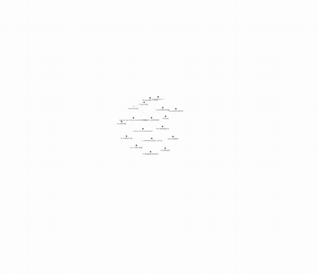

Media to Notes
音视频笔记.
让音视频成为可以回看的知识。

工作流演示：整理这集课程时，知识图谱从核心概念向外展开，并循环播放。
真正留下来的往往只有一条链接。
我们每天会收藏很多视频、播客和课程。它们可能讲清楚了一个概念，也可能包含一段值得反复琢磨的访谈。但看完之后，真正留下来的往往只有一条链接。过段时间再想找某个观点、例子或画面，就得重新拖动进度条。
我想解决的问题是：能不能把音视频里的内容，整理成一份以后能读、能查、也能继续使用的笔记？
Media to Notes 是我围绕这个问题设计的一套 Agent Skill。它把素材获取、语音转写、内容整理、视频截图和资料补充连接起来，目标是让 Agent 从一条链接、一份音视频文件，或一份已有逐字稿出发，生成符合用户需求的 Markdown 笔记。
从逐字稿到真正可读的笔记。
这套流程最初来自我自己的使用经验。
我会把视频和播客下载到 NAS 上，用本地模型完成语音转写。但逐字稿只能解决“把声音变成文字”的问题：它可能没有标点，专有名词会识别错，一段完整的解释也可能被切成很多碎句。
更重要的是，视频里有些信息并不在声音里。一张模型架构图、一段代码演示，或者讲者用来解释概念的公式，单靠逐字稿很难还原。
所以我后来会把逐字稿交给 Codex，让它梳理内容，再回到原视频中寻找有价值的画面，把截图放进笔记对应的位置。遇到技术课程，还会查阅论文、官方文档等资料，为难理解的概念补充背景。
Media to Notes 就是对这套反复使用、不断调整的流程的一次整理：既保留自动化处理的效率，也让 Agent 负责理解内容、判断重点和核对图文。
它能做什么。
用户可以根据自己的目的选择成果形式：保留原话的逐字稿、内容完整的详细整理、快速阅读的重点摘要、围绕特定问题的专题笔记，或包含议题、决定和待办的会议纪要。
Skill 会根据选择调整整理方式。课程笔记侧重概念、例子和推导；访谈与播客关注观点、论据和讨论中的分歧；会议纪要则需要区分已经作出的决定和尚未确定的事项。对于没有可靠依据的发言者、负责人或期限，不应该自行猜测。
对于视频，Agent 会查看原画面，挑选真正有助于理解的图表、公式、代码或演示步骤，放到相关文字附近，并说明图片的作用。截图数量由内容决定，不为了配图而配图。
对于学习类内容，Agent 还可以查询外部资料，解释概念并补充相关背景。笔记会区分原素材的内容与外部补充，让读者知道信息从哪里来。
最终成果默认使用普通 Markdown，图片作为附件保存，方便阅读、编辑和迁移到其他笔记工具中。
让经验可以被复用。
在摸索过程中，我逐渐积累了不同平台的处理经验：例如抖音视频和合集的获取、小宇宙音频与节目简介的整理，以及小红书浏览器登录与素材获取过程中的问题排查。
这些经验会作为分平台资料加入 Skill，而不是写死成一套只适用于我自己 NAS 的操作。Skill 的核心负责描述工作方法，具体的下载工具、转写模型和运行环境则可以按用户条件选择。
转写环节优先引导使用合适的本地模型。如果本地能力不足，也可以由用户选择云端服务，并了解需要上传哪些内容以及可能产生的费用。
当前进展。
目前，Media to Notes 已完成，涵盖通用流程、不同笔记类型、视频配图、资料查询，以及抖音、小宇宙、小红书的下载历史经验。
它仍处于验证阶段：平台获取方式和不同 Agent 的兼容性需要继续用真实素材测试；可移植的下载和截图工具也还在规划中。接下来，我希望把这套自己反复使用的工作方式打磨成更多人可以自行安装、按需组合的工具。
安装到你的 Agent。
把下面这段提示交给你的 Agent。它会下载完整的 media-to-notes 目录，并安装到当前环境的 skills 文件夹。
请帮我安装 Media to Notes 这个 Agent Skill。 源码：https://github.com/fengbaoYao/xingyu-portfolio/tree/main/skills/media-to-notes 压缩包：https://fengbaoyao.github.io/xingyu-portfolio/portfolio-assets/media-to-notes-skill.zip 请下载整个 media-to-notes 目录（保留 SKILL.md 与 references/ 结构），安装到当前 Agent 的 skills 目录（Codex 常见路径：~/.codex/skills/；Claude Code：~/.claude/skills/；其他 Agent 按各自约定），然后刷新或重启技能列表。安装完成后，用它把我给出的视频、音频、播客、会议录音或已有逐字稿，整理成可阅读的 Markdown 笔记。